Типы кофеварок
Турка
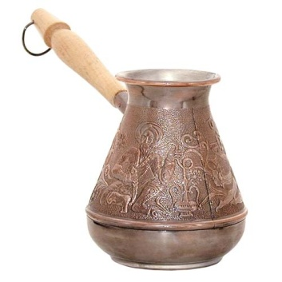До начала научно-технического прогресса почти весь мир довольствовался способом изготовления кофе, изобретённым ещё арабами: кофе варился в турке или в специальном сосуде. Собственно, турка (или джезва) используется и сегодня: она относится к надплитным кофеваркам — то есть к тем, которые надо нагревать.
Гейзерная кофеварка
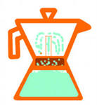Помимо турки, в семействе надплитных кофеварок есть ещё гейзерная. В 1827 году была изготовлена первая опытная модель. Это - аппарат, состоящий из трёх секций. В нижней размещается вода. В среднюю, сделанную в виде сетчатого фильтра, кладут молотый кофе.
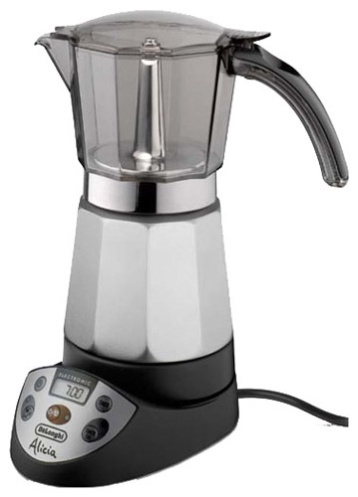В верхней через узкую трубку, ведущую от второй секции — конденсируется уже готовый напиток. Кофеварку ставят на плиту, дожидаются закипания воды, когда пар под давлением пройдет через кофейную массу, и затем из верхней секции разливают кофе. Со временем конструкция гейзерных кофеварок усложнилась, в ней появились электронагревательные элементы, клапаны и подвижные шайбы, однако принцип её действия остался тем же.
Капельная кофеварка
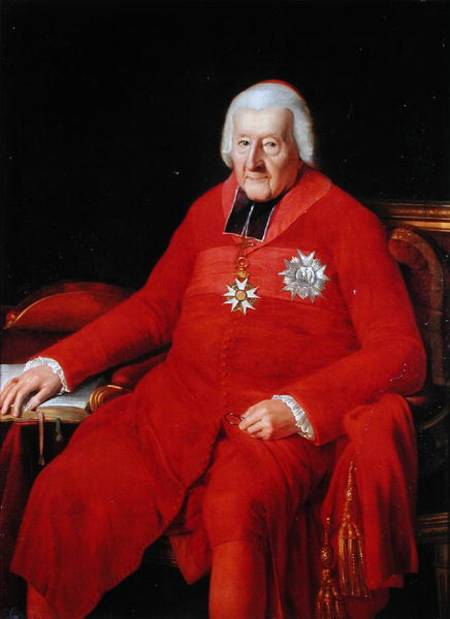 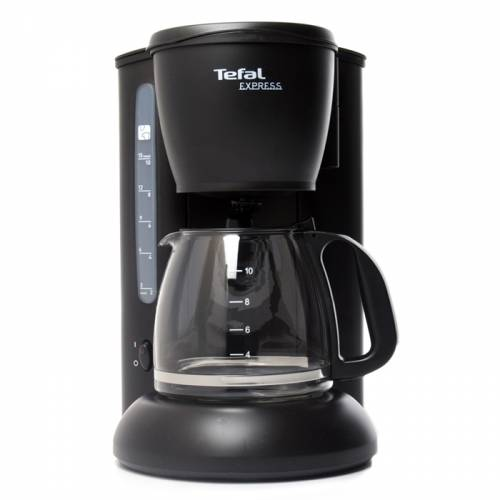В 1800 г. французский архиепископ де Беллуа изобрёл капельную кофеварку, в которой вода, капля за каплей, однократно проходила через фильтр с молотым кофе.
Чалдовая кофеварка
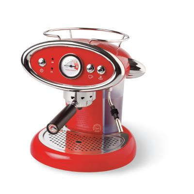Чалдовая технология была придумана в Италии, с целью упростить приготовление эспрессо. Суть ее в оригинальном способе загрузки кофейного порошка – чалдами.
Что же такое чалд? Это упакованная в фабричных условиях порция жареного молотого кофе, спрессованного и помещенного между двумя слоями специальной бумаги, исполняющей роль фильтра.
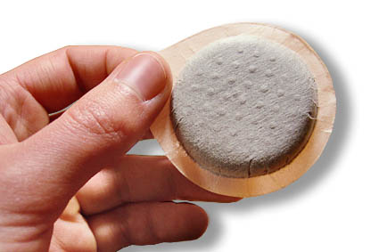Существует несколько чалдовых систем, наиболее распространённые: SENSEO (55 мм диаметр) и E.S.E. (44 мм).
К преимуществам «чалдового кофеварения» можно отнести максимальную простоту и удобство в использовании.
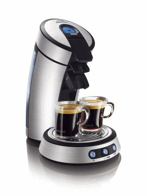Ведь приготовить настоящий эспрессо из кофейных зерен не так-то просто. И если Вы не являетесь заядлым кофеманом, но изредка хотите побаловать себя качественным эспрессо, пожалуй, чалды – неплохая альтернатива дорогущим автоматическим аппаратам. Чалдовая технология позволит насладиться качественным эспрессо не имея специальных навыков по его приготовлению.
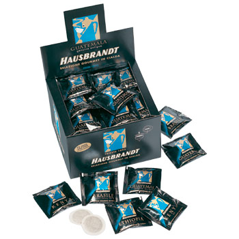К недостаткам технологии можно отнести высокую цену на сами чалды, которые продаются упаковками, так же как и пакетики с чаем. В зависимости от количества «пакетиков» и от сорта кофе стоимость упаковки может колебаться в пределах от 300-500 рублей за 10-ти чалдовую.
А также не распространенность этих чалд в наших магазинах.
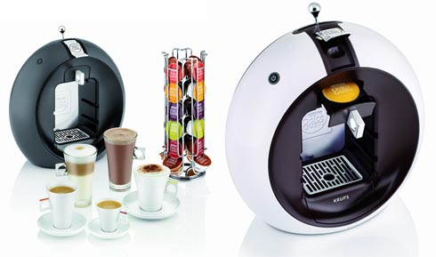Капсульная кофеварка
Кофейной капсулой, называют пластиковую коробочку в которую упакован кофе, которая в свою очередь запаяна сверху фольгой. Находящееся в капсуле количество кофе точно рассчитано на приготовление одной порции. Кофейная капсула имеет два фильтра, а капсульные кофемашины оснащены специальной системой их прокалывания.
Автоматические капсульные кофемашины способны нажатием всего одной кнопки приготовить вам такие напитки как эспрессо, капучино, латте, латте маккиато и другие не менее замечательные напитки.
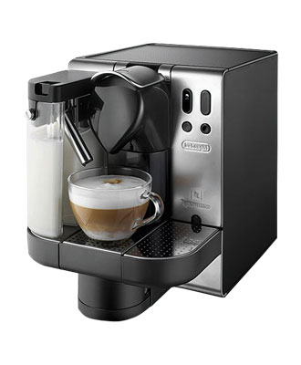 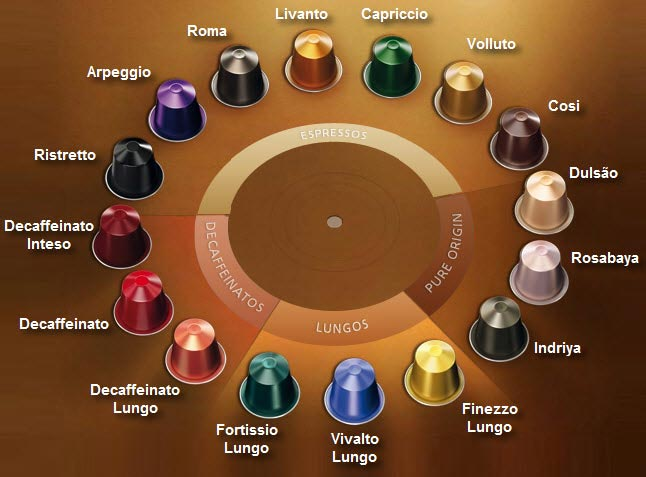Капсульные кофемашины могут оснащаться: автоматическим капучинатором, либо отдельным контейнером для взбивания молочной пенки.
К достоинствам капсульных кофемашин и кофеварок несомненно можно отнести:
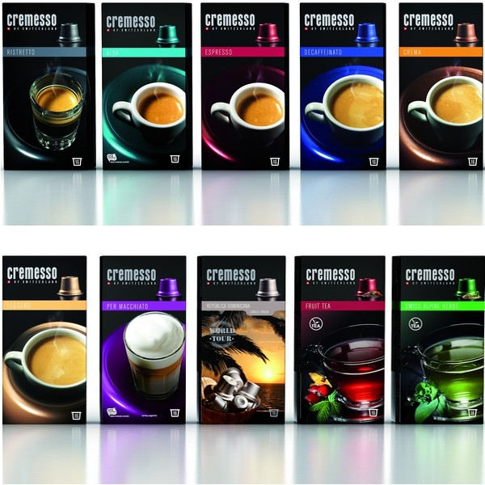высокое качество получаемого кофе, простота использования и обслуживания, невысокая цена и учет потребления кофе, а также достаточно компактные размеры. Самым главным достоинством является тот факт, что капсульные кофемашины не оставляют после себя ни капли грязи, что особенно актуально для офисов и небольших кухонь.
К недостаткам, можно отнести: ограниченный выбор кофе, отсутствие возможности

экспериментировать с приготовлением и соответственно вкусом и крепостью кофе, относительно высокая стоимость порции кофе. Так же не универсальность капсул.
Кофемашины
Общее понятие
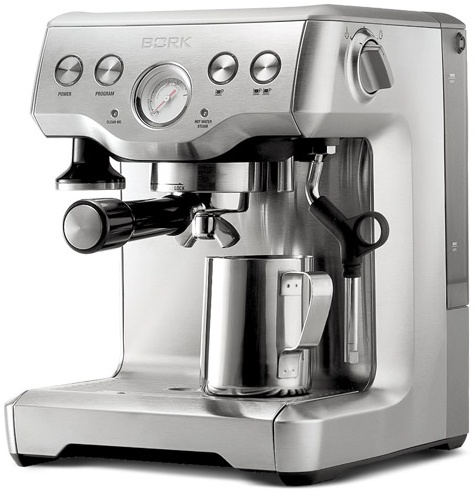Процесс приготовления эспрессо в автоматических кофемашинах полностью автоматизирован. Все, что вам нужно сделать — это нажать на одну единственную кнопку. Такие кофемашины оснащены встроенной кофемолкой, емкостями для зерен и воды, дозатором, насосом для приготовления кофе под давлением, нагревательным устройством для подогрева воды, емкостью для отходов, а также электроникой, которая контролирует весь процесс приготовления кофе и настройки кофемашины.
Автоматические кофемашины позволяют вам быстро и комфортно приготовить эспрессо, капучино или другой кофе идеального качества, сохраняющий весь свой вкус и аромат. Они дают возможность полностью запрограммировать весь процесс приготовления ароматного напитка. Например, они могут «запомнить» то количество молотого кофе, которое необходимо на одну порцию в зависимости от вида напитка. При этом каждой кнопке будет соответствовать свой напиток.
Основными характеристиками, из которых складывается цена кофемашин, являются следующие:
- Система контроля расхода воды
- Система контроля расхода кофе
- Настройка температуры заваривания
- Система предварительной ароматизации кофе
- Встроенная система очистки воды
- Встроенные программы промывки, очистки гидросистемы, декальцинации
- Диалоговый дисплей
- Программирование аромата кофе
- Функция подачи горячей воды и пара
- Программирование количества подачи горячей воды и пара
- Программирование времени автоматического выкл./вкл.
- Система Авто-капучино
- Функция программирования количества смалываемого кофе
- Счетчик чашек
- Возможность использования молотого кофе
BORK C803
Технические характеристики
Мощность: 1500-1750 Вт
Давление: 15 бар
Вес: 8.2 кг
Материал корпуса: нержавеющая сталь
Емкость съемного бака для воды: 1.8 л
Емкость поддона для капель: 0.6 л
Длина электрического кабеля: 1 м
Срок гарантии: 2 года
Особенности
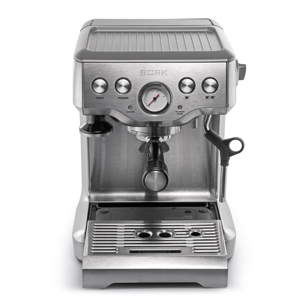Предварительное заваривание
Перед приготовлением через кофе пропускается горячая вода при пониженном давлении (60 % от максимальной потребляемой мощности помпы) в течение 7-ми секунд. Это позволяет добиться оптимальной плотности кофейной таблетки для идеальной экстракции.
Подача горячей воды
Функция позволяет разбавить слишком крепкий кофе, приготовить классический американо или заварить чай.
Максимальный объем – 250 мл. Подачу горячей воды нельзя осуществлять одновременно с приготовлением кофе.
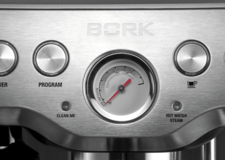Автоматическая функция стабилизации температуры воды
Мощный нагревательный элемент и помпа с давлением 15 бар
Функция программирования объема кофе
Позволяет сохранить в памяти персональные настройки объема эспрессо для приготовления одной или двух чашек кофе.

Фильтры с одинарным и двойным дном
Пресс для утрамбовки кофе
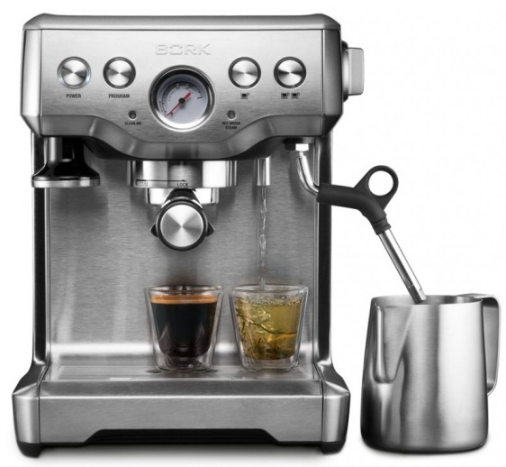Позволяет утрамбовывать молотый кофе, не снимая пресс с кофеварки, а также идеален для ручной утрамбовки.
Возможность приготовления капучино
Панель для подогрева чашек
Фманометр
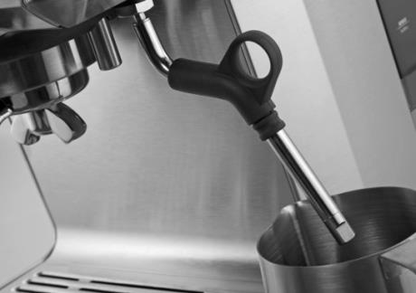Пенал для хранения принадлежностей
Капучинатор вращается на 360°.
Цикл полной очистки
Облегчает процесс ухода за кофеваркой даже в условиях использования жесткой воды и избавляет от необходимости промывать детали кофеварки вручную.
Фильтры для воды
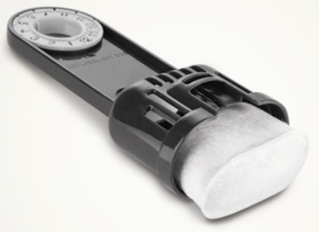Кофейная станция BORK C804
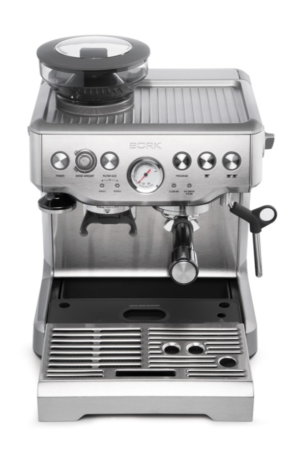Технические характеристики
Мощность: 1560-1850 Вт
Давление: 15 бар
Габариты (ВxШxГ): 38x31x29 см
Вес: 10.4 кг
Материал корпуса: нержавеющая сталь
Емкость съемного бака для воды: 2 л
Длина электрического кабеля: 1 м
Срок гарантии: 2 года
Особенности
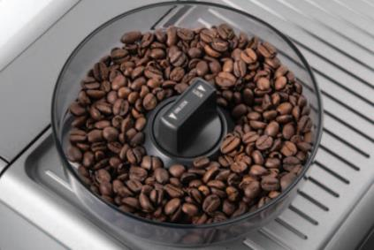Встроенная коническая жерновая кофемолка
Кофеварка относится к классу полнофункциональных эспрессо машин, поэтому заваривание каждой чашки кофе начинается с помола зерен.
Регулировка степени помола (18 уровней) позволяет варьировать измельчение кофейных зерен по вкусу и в зависимости от сорта кофе. Объем кофемолки 250 г.
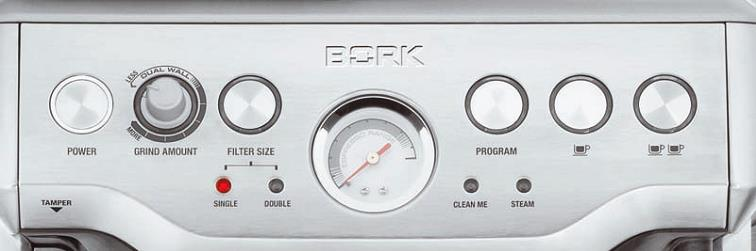Дозировка количества молотого кофе
Возможность плавной и точной дозировки количества молотого кофе позволит Вам добиться желаемой крепости эспрессо.
Предварительное заваривание
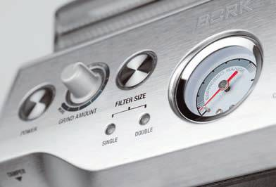Перед приготовлением через кофе пропускается горячая вода при пониженном давлении (60 % от максимальной потребляемой мощности помпы) в течение 7-ми секунд. Это позволяет добиться оптимальной плотности кофейной таблетки для идеальной экстракции.
Точный контроль температуры и давления
Кофеварка оснащена манометром и автоматическим датчиком контроля температуры для оптимальной экстракции кофе.
Автоматическая функция стабилизации температуры воды
Фильтры с одинарным и двойным дном
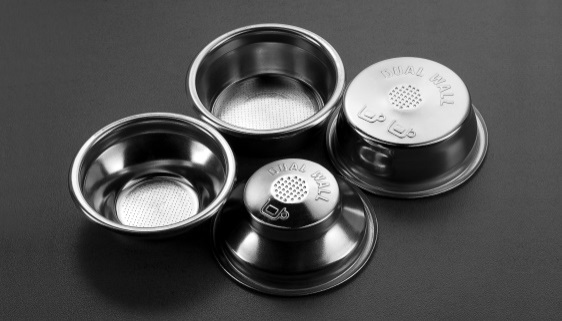Фильтры для воды
Пенал для хранения принадлежностей
Диспенсер подачи горячейводы
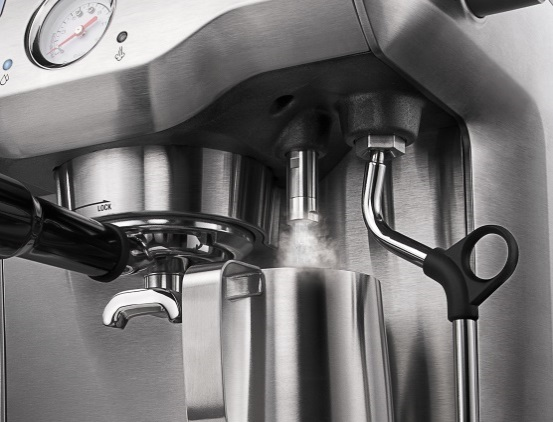Диспетчер предназначен для подачи горячей воды, для приготовления кофе американо, заваривания чая и предварительного подогрева чашек.
Капучинатор вращается на 360°
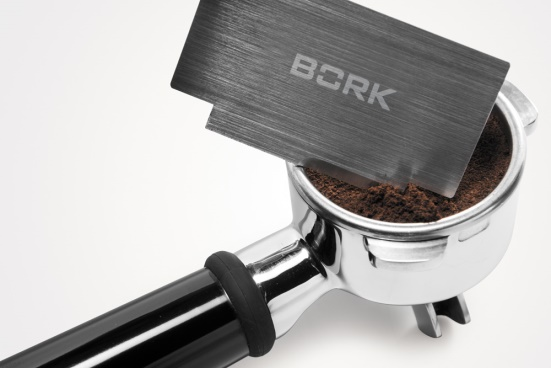Аксессуар для выравнивания кофейной таблетки
Пресс для утрамбовки кофе
Панель для подогрева чашек
Цикл полной очистки
Энергосберегающий режим
После 30 минут ожидания кофеварка автоматически переключается в режим энергосбережения. Потребление электроэнергии снижается на 50%.
После 2 часов ожидания кофеварка автоматически отключается.

Регулировка температуры воды
Для каждого сорта кофе нужна своя температура воды при заваривании. Кофейная станция C804 позволяет изменять температуру воды по умолчанию (93°C) в пределах ±2°C.